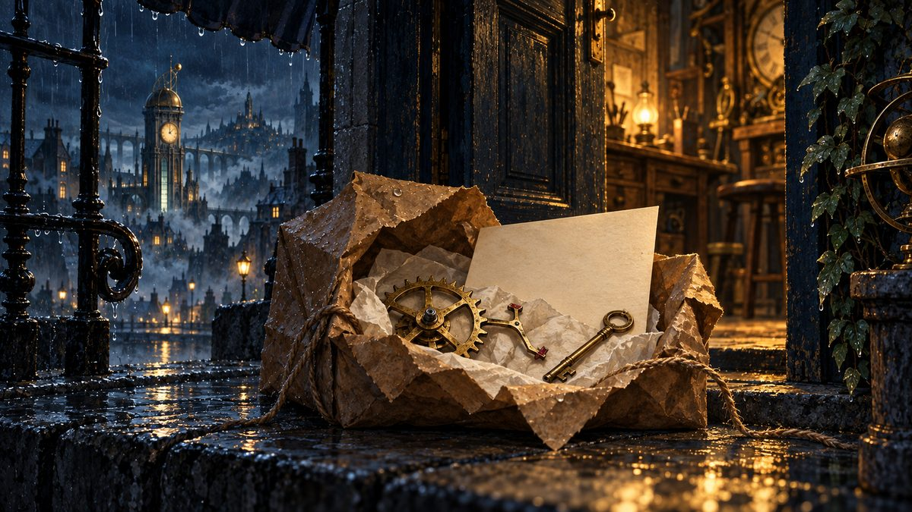
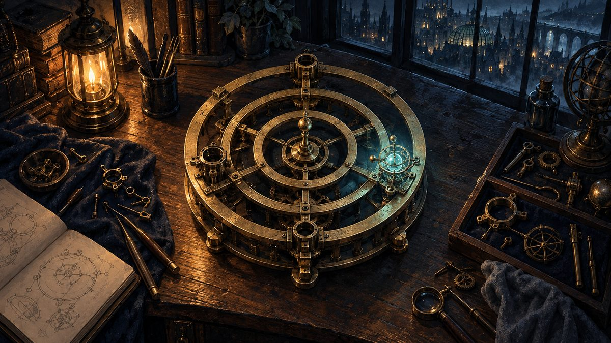

The held second
The premise, the opening pages, and the first people and creatures you meet in a city stopped at 23:59:59.
On this page
Every game of The Last Second Workshop begins at the same moment: 23:59:59.
The rain stopped before it reached the pavement. Across the city of Meridia, every clock agreed on the same impossible second. The last train hung between two stations. Someone was still waving from a window.
A parcel from tomorrow
Your workshop is at the end of Wren Street. A parcel is waiting on the step, dry under the hanging rain. Inside it are a broken escapement, a brass key and a letter dated tomorrow.

The handwriting is Iona's. She was your teacher and has been missing for seven years. The letter reads:
"I did not stop the city to keep it forever. I stopped it because we had not finished getting everyone home. If you can hear the ticking, there is still a way through. Keep what matters. Let the rest change."
On the back is a map of Meridia with six districts around an empty circle and your workshop drawn in the middle. One more line shows up only when you hold the paper near the clock: "Start small. A second is a place somebody can stand."
The workshop inside the second
One clock on your bench still moves, and that is where the game starts. You catch its pulse to gather Moments, and your first Splitter gathers them for you. Moments buy machines, machines make more Moments, and the workshop grows outward in rings. Once it has grown as far as it usefully can, you take it apart on purpose and rebuild it. That is a Fold.
You can't fail, and stepping away costs you nothing. The game's own opening says there is no rush to learn everything.

The first night
The parcel is wrapped in a page of a railway timetable, the 23:58 to the coast, with Iona's sums pencilled in the margins. Your old tools are still on their hooks. The clock on the bench is the only thing in Meridia still ticking.
Near dawn, if it is a dawn, a small light settles on the windowsill. It looks like a moth made of lamplight, and it doesn't flutter. It just waits.
That is the lantern moth, your companion in the game. It drifts closer whenever you keep the beat of the clock. There is more on the characters page.
The first voices
Within your first few catches you hear a woman's voice between the clock's ticks. Mara Vale is a signal operator in a box beside a train that has not moved in seven years. "If anyone can hear me, do not move the train." She knows every face on the platform, and she asks you to keep answering.
A little later, with four machines running, a courier called Senn turns up in your doorway with a bag of letters that never arrived. You build a path long enough for one delivery. When he comes back, his coat is wet with rain that has finished falling.
The story continues as your workshop grows, one transmission at a time, in the City and Journal screen. From here:
- Getting started for your first ten minutes.
- Characters for everyone you will meet.
- Atlas of Meridia for the places the story visits (contains spoilers).